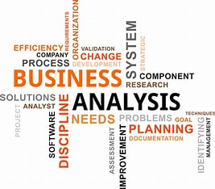
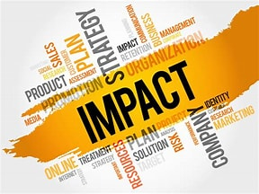
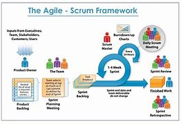
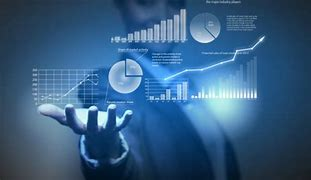
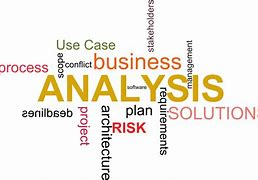
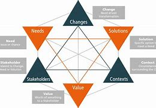

“What is Business Analyst? Roles, Responsibility, Skills, Certifications.”
“All who have accomplished great things have had a great aim, have fixed their gaze on a goal which was high, one which sometimes seemed impossible.”

What is Agile Methodology? click to visit Agile Methodology meaning a practice that promotes continuous iteration of development and testing throughout the software development lifecycle of the project.
click to visitScrum is a framework for developing and sustaining complex products. This Guide contains the definition of Scrum. This definition consists of Scrum’s roles, events, artifacts, and the rules that bind them together. Ken Schwaber and Jeff Sutherland developed Scrum; the Scrum Guide is written and provided by them. Together, they stand behind the Scrum Guide.
  